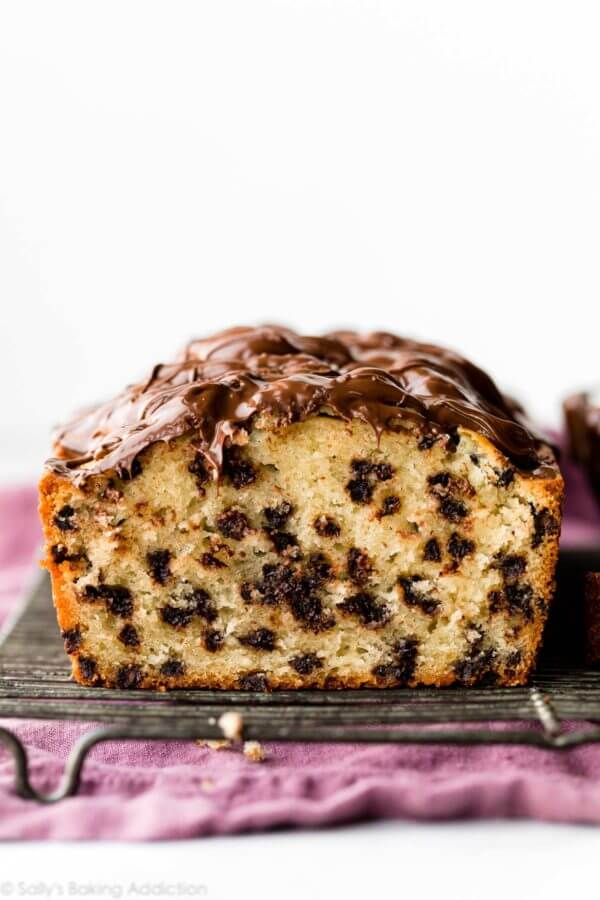

Chocolate Chip Loaf Cake

Ingredients
Optional Topping
Instructions
- Preheat the oven to 350°F (177°C) and generously grease a 9×5 inch loaf pan.
- Make the cake: Whisk the flour, baking powder, and salt together. Set aside.
- Using a handheld or stand mixer fitted with a paddle or whisk attachment, beat the butter and sugar together
on medium-high speed until smooth and creamy, about 2 minutes. Scrape down the sides and up the bottom of the
bowl with a rubber spatula as needed. Add the eggs and beat on high speed for 1 minute, then beat in the sour
cream and vanilla extract. Scrape down the sides and up the bottom of the bowl as needed. The mixture will be
very lumpy and appear curdled– that’s ok. Pour the dry ingredients into the wet ingredients. Turn the mixer to
low speed and as the mixer runs, slowly pour in the milk. Beat on low speed just until all of the ingredients
are combined. Do not over-mix. You may need to whisk it all by hand to make sure there are no large lumps at
the bottom of the bowl. The batter will be slightly thick. Gently fold in the chocolate chips.
- Pour and spread batter evenly into prepared loaf pan.
- Bake for about 60-75 minutes or until a toothpick inserted in the center comes out clean. That time
is a guideline— all ovens differ, so keep a close eye on the cake after 55
minutes. If the cake is browning too quickly on top, loosely tent with aluminum foil as it bakes.
- Cool cake in the pan set on a wire rack for at least 1 hour before removing from the pan. Feel free to
continue cooling it directly on a wire rack or slice and enjoy then. (It will still be slightly warm.) You can
drizzle the topping on the cake when the cake is still slightly warm after that 1 hour of cooling or wait
until the cake has cooled completely to top it.
- Optional Topping: Stir and melt chocolate chips and peanut butter together in a small
saucepan over medium heat on the stove or in a heatproof bowl using the microwave. We usually use the
microwave and melt in 30 second increments, stirring after each until smooth. Drizzle over cake. Topping sets
into a fudge-like consistency after several hours.
- Cover leftovers tightly and store cake (with or without topping) at room temperature for 3 days or in the
refrigerator for up to 1 week.